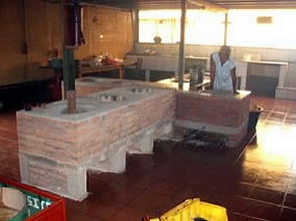
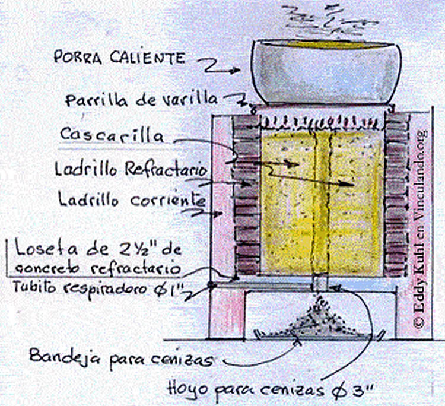
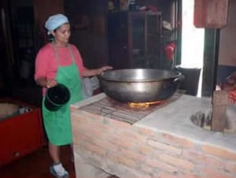

Cocina con cascarilla de café
¿Ha sentido Ud. el olor a humo que despide la ropa de un campesino en Nicaragua?, y ¿Ha visto Ud. en las carreteras el transporte de grandes cantidades de leña? Esto es grave y hay que buscarle soluciones económicas y viables al problema de cocinar con leña
En Nicaragua hay un problema de sobreuso de leña para cocinar. La leña, además de producir contaminantes, está en escasez. Debido a los problemas que el uso de leña tiene con la ecología, se han buscado otras alternativas. Una opción al uso de leña es utilizar cascarilla de café como combustible.
Sistemas de Biogás
Debido a los problemas de contaminación y escasez de la leña, y como parte la conciencia ecológica, el uso de sistemas de biogás se ha explorado como alternativa. En 1994 se construyo un tanque de biogás a partir de estiércol de vaca, y en 2007 un tanque de biogás a partir de las aguas negras humanas producidas en las “ecoletrinas”. Estas prácticas, así como la obtención de más de 1000 toneladas de abono orgánico por el sistema de compostaje y de lombrices californianas fueron motivos para que Selva Negra, en Nicaragua recibiera en 2007 un premio internacional de la Specialty Association of America, llamado: “SCAA Sustainability Award.”
Limitaciones del Biogás
El metano es un material indispensable en la producción de biogás. El sistema de biogás más fácil de producir es con estiércol de vaca porque la bacteria que produce el metano la tienen las vacas en su estómago, seguida por el de las aguas mieles de café. Sin embargo, el sistema de las aguas mieles es muy caro porque hay que neutralizar la acidez del mucílago de café usando neutralizante que tiene que ser comprado y transportado de Managua.
El metano más difícil de producir es con aguas negras humanas porque contiene agentes como jabón, papel, y tantas cosas que come una persona que no son muy digeribles por las bacterias anaeróbicas.
Fogones a base de cascarilla de café
La construcción de cocinas en las fincas en Nicaragua es para poder alimentar a los empleados. Por eso, generalmente se construyen cocinas grandes con muchos fogones. La cocina que se describe en este artículo tiene una forma de cruz y un total de 9 fogones. Las dimensiones son 70 cm de ancho por 70 cm de alto y el largo necesario para alojar unos cinco fogones a un lado y cuatro fogones en el otro brazo de la cruz. Los hoyos para los fogones miden 45 cm de diámetro por 40 cm de fondo, y están separados 25 cm entre sí.
Materiales y funcionamiento
El material que se usó fue ladrillo rojo de cuarterón para las paredes, ladrillo refractario alrededor de donde habrá fuego y concreto reforzado de 1.5 pulgadas de espesor para la loseta inferior.
Al fondo del fogón se deja un hueco de 3 pulgadas para que caiga la ceniza después de la combustión, además en la loseta hay huecos horizontales de una pulgada de diámetro para permitir que entre aire a la cascarilla por debajo.
Al nivel del piso y debajo de la loseta se deja un espacio para poner una bandeja que recoja las cenizas.
Proceso de carga y combustión
La cascarilla de café se echa por arriba y se aplasta un poco, mientras se sostiene un tubo de 3" en el centro coincidiendo con el hueco de 3" del fondo, luego se saca el tubo y así queda un hueco con su forma moldeada. La cascarilla queda toda recostada en la loseta del fondo.
Para encender el fogon se necesitan unas gotas de diesel. La combustión se produce con el oxigeno que entra por el tubo de 1" de respiración en la loseta, además del hueco de 3" que sirve también para evacuar las cenizas. 
Innovaciones recomendadas
Una innovación que se recomienda para evitar que se partan los ladrillos del cuerpo de las cocinas es no usar acero de refuerzo ni en las paredes ni en la loseta de la superficie porque el acero al calentarse se expande y puede romper el concreto. En vez de acero, en las paredes se pone el ladrillo en forma “cuatropeada”, es decir conectados unos con otros. 
Ventajas
La construcción de fogones ha sido muy exitosa. Algunas ventajas del uso de fogones son:
- Se redujo a cero el uso de leña.
- La cascarilla de café es abundante y gratuita.
- El humo se redujo a niveles casi imperceptibles.
- El ambiente es más ordenado y limpio.
- La combustión es casi perfecta.
- Gran beneficio para la conservación del medio ambiente y para la salud de los trabajadores